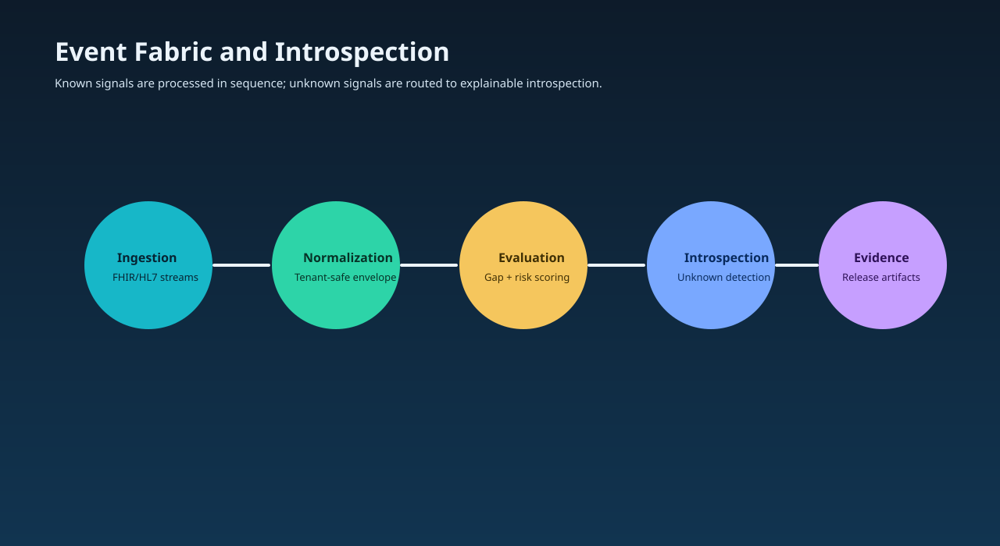

Care gap detection
Gaps are derived from normalized data and evaluated against quality measure logic with tenant-safe context controls.
This track explains how event-driven ingestion and AI guidance identify high-impact gaps, rank outreach actions, and support explainable clinical decisions.
Clinical teams need the right signal at the right time. HDIM translates incoming events into ranked next-best actions with transparent rationale.
Gaps are derived from normalized data and evaluated against quality measure logic with tenant-safe context controls.
AI orchestration proposes interventions, confidence cues, and escalation recommendations for care teams.
Each intervention path connects to measurable outcomes and operational performance traces.
